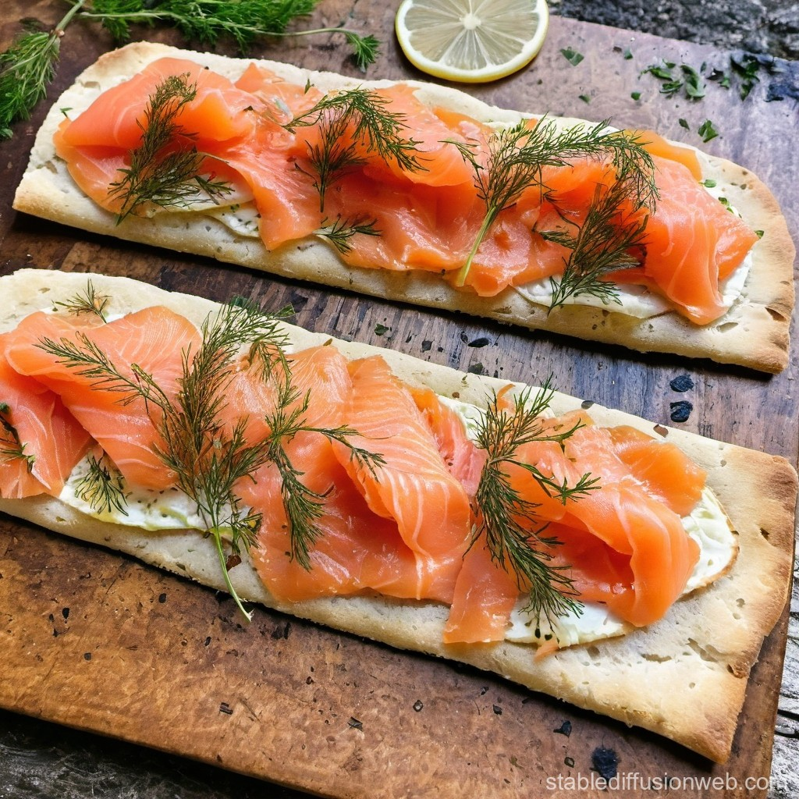

Flatbread with Smoked Salmon

Description
Flatbread was a staple in Viking cuisine, often paired with fish. Odin may have enjoyed flatbread topped with smoked salmon or other preserved fish.
Ingredients
- 1 cup rye flour
- 1 cup barley flour
- ½ cup water
- 1 teaspoon salt
- 2 tablespoons olive oil
- 200g smoked salmon
- Fresh dill (optional)
Steps
- Mix the flours and salt in a bowl. Gradually add water and olive oil, kneading until you form a soft dough.
- Divide the dough into small balls and roll each one out into thin rounds.
- Heat a skillet over medium heat and cook each flatbread for about 2 minutes on each side until browned and firm.
- Let the flatbreads cool slightly before topping them with smoked salmon and fresh dill.
- Serve as an appetizer or side dish.